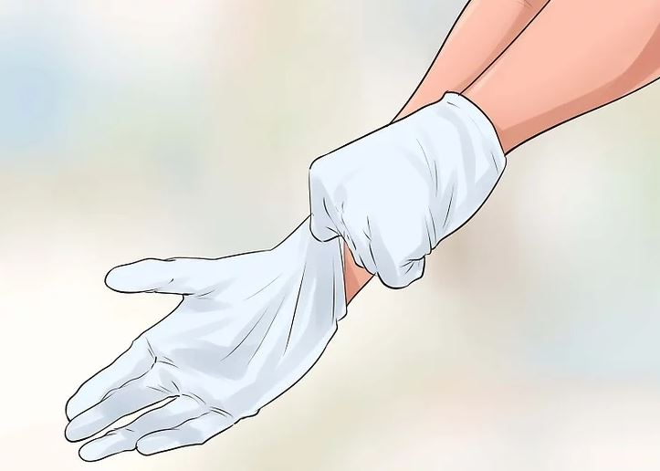
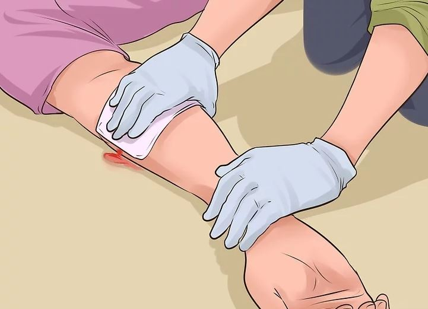
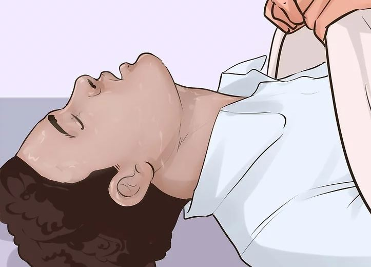
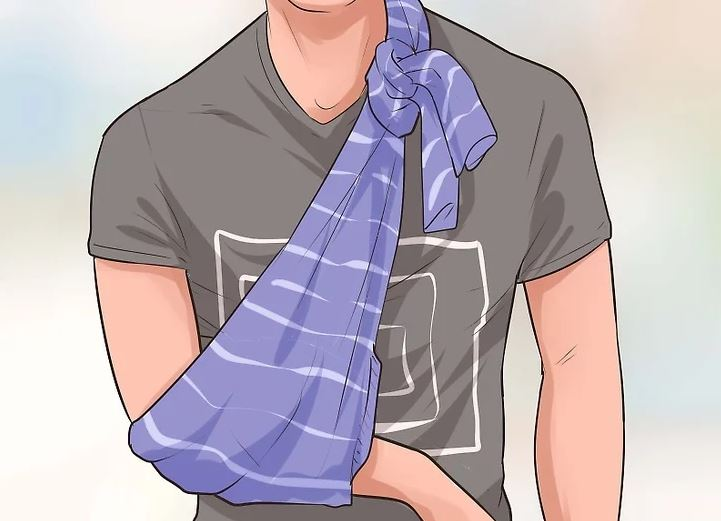
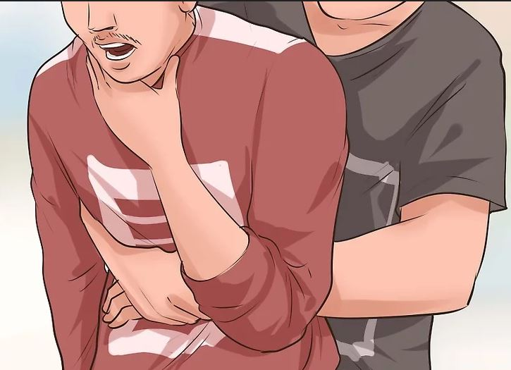
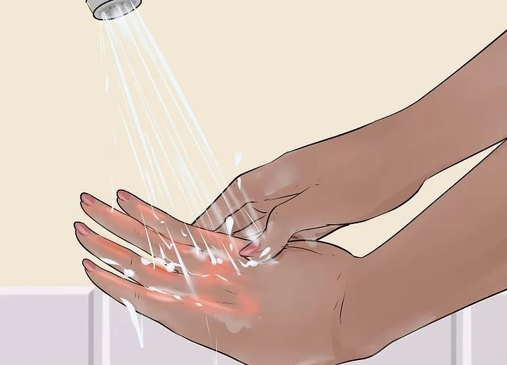
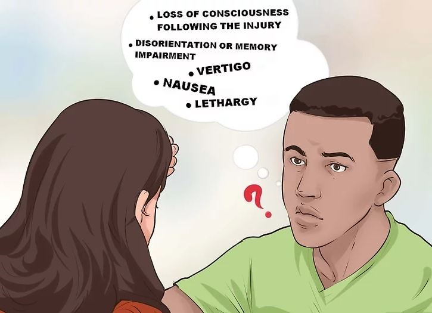
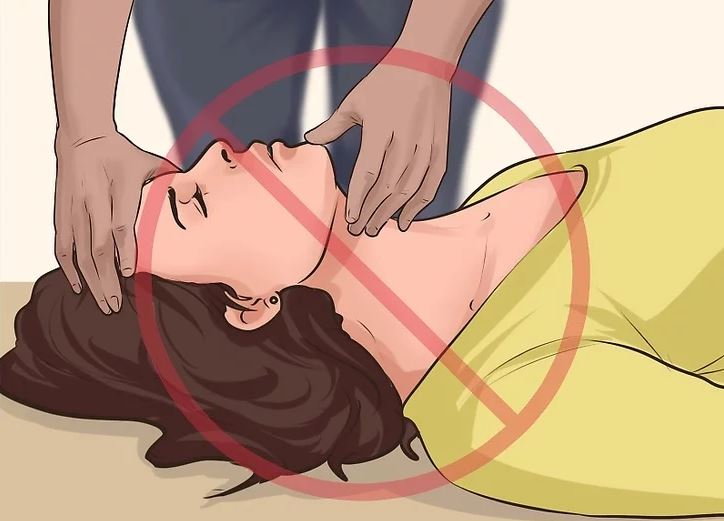

Basic First Aid
METHOD 3: Treating Common Problems In First Aid Scenarios

1. Protect yourself from bloodborne pathogens
Bloodborne pathogens can threaten your health and wellbeing by causing sickness and disease. If you have a first aid kit, sanitize your hands and put on sterile gloves. If sterile gloves and sanitizer are not available, protect your hands with extra gauze or cotton. Avoid direct contact with the other person's blood. If you do end up making contact, make sure to clean yourself off as soon as possible. Eliminate any remaining sources of contamination.

2. Stop the bleeding first.
After you have established that the victim is breathing and has a pulse, your next priority should be to control any bleeding. Control of bleeding is one of the most important things you can do to save a trauma victim. Use direct pressure on a wound before trying any other method of managing to bleed. Read the linked article for more detailed steps you can take.
Treat a bullet wound. Bullet wounds are serious and unpredictable. Read on for special considerations when treating someone who has suffered a gunshot wound.

3.Treat shock next.
Shock, often caused by a loss of blood flow to the body, frequently follows physical and occasionally psychological trauma. A person in shock will frequently have cool, clammy skin, be agitated or have an altered mental status, and have pale color to the skin around the face and lips. Untreated, shock can be fatal. Anyone who has suffered a severe injury or life-threatening situation is at risk for shock.

4. Provide first aid for a broken bone
A broken bone, however common, can be treated with the following steps:
Immobilize the area. Make sure that the broken bone doesn't have to move or support any other body parts.
Numb the pain. Often, this can be done with an ice pack covered by a towel.
Make a splint. A bundle of newspapers and sturdy tape will do just the trick. A broken finger, for example, can also use another finger as a stabilizing splint.
Make a sling, if necessary. Tie a shirt or a pillowcase around a broken arm and then around the shoulder.

5.Help a choking victim.
Choking can cause death or permanent brain damage within minutes. Read this article for ways to help a choking victim. The article addresses helping both children and adult choking victims.
One of the ways to help a choking victim is the Heimlich maneuver. The Heimlich maneuver is performed by straddling the victim from behind and bear-hugging them with your hands interlocked above their belly button but beneath their breastbone. Thrust upward to expel air from the lungs and repeat until you are successful in clearing the object from the windpipe.

6. Learn how to treat a burn.
Treat first- and second-degree burns by immersing or flushing with cool water for at least 10 minutes (no ice). Don't use creams, butter, or other ointments, and do not pop blisters. Third-degree burns should be covered with a damp cloth. Remove clothing and jewelry from the burn, but do not try to remove charred clothing that is stuck to burns.

7. Look out for a concussion.
If the victim has suffered a blow to the head, look for signs of concussion. Common symptoms include:
Loss of consciousness following the injury
Disorientation or memory impairment
Vertigo
Nausea
lethargy
loss of memory of recent events (short term memories)

8. Treat a Spinal Injury Victim.
If you suspect a spinal injury, it is especially critical that you not move the victim's head, neck, or back unless they are in immediate danger. You also need to take special care when performing rescue breathing or CPR. Read this article to learn what to do.
NEXT